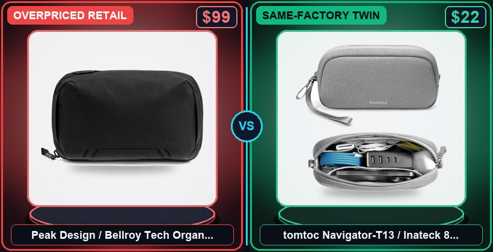

$99 Peak Design vs. $22 tomtoc Navigator-T13 (Water-Repellent 840D Twin)
Paying $99 for a zippered nylon bag to hold your $20 charging cables is peak tech-bro markup.

Water-Repellent 840D Recycled Ballistic Nylon Shell + Genuine YKK Aquaguard Weatherproof Zippers + Clamshell Origami Accordion Gussets + EVA Foam Shock-Padded Frame
Forensic Supply-Chain Breakdown & Bill-of-Materials Audit
What makes a $99 tech pouch stand upright on your desk and swallow a laptop brick, mouse, power bank, and SSD without turning into a tangled rat's nest? Origami accordion dividers sewed inside a stiff EVA-padded shell, wrapped in water-repellent ballistic nylon and sealed with YKK Aquaguard zippers. Check the zipper pulls on this $22 tomtoc twin: genuine YKK water-resistant zippers, 840-denier ballistic nylon, and the exact same clamshell origami pocket layout.
Same YKK hardware, same origami layout, $77 stays in your pocket. Grab the $22 ballistic tech pouch twin in the pinned comment.
Frequently Asked Questions (Episode #058)
1. What is the same-factory OEM twin for Peak Design / Bellroy Tech Organizer Pouch ($99)?
The verified OEM Factory Twin is tomtoc Navigator-T13 / Inateck 840D Ballistic Origami Tech Caddy at $22 (saving you $77 or 78% off retail). Both share Water-Repellent 840D Recycled Ballistic Nylon Shell + Genuine YKK Aquaguard Weatherproof Zippers + Clamshell Origami Accordion Gussets + EVA Foam Shock-Padded Frame.
2. How do I get the lowest net price on tomtoc Navigator-T13 / Inateck 840D Ballistic Origami Tech Caddy?
Compare the Amazon Prime fast-ship link ($22), AliExpress factory-direct wholesale link, and eBay Certified Open-Box link above, then stack the £25 / $30 Rakuten Cashback sign-up bonus.